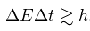

|
The explanation, if we want to call it that, for the wider mass distribution for shorter-lived partices lies close to the heart of quantum mechanics, in the energy-time version of Heisenberg's uncertainty principle. That principle is represented by the equation,  So more massive particles are shorter-lived, and shorter-lived particles have greater uncertainty in their mass distribution. This (together with measurement uncertainty that increases with energy) is a second reason why distributions along the dimuon mass spectrum are wide. Because these distributions are wide and overlapping, no single cause can be attributed to any particular event; there are always multiple physical processes that might have produced an event of that type. And thus particle identification is based on statistical analysis of many different events, plotted in histograms. Wikipedia explanation of the Heisenberg Principal |
|
Displaying Multiple events - Close Window |